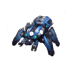

<div class="row">
    <div class="col" style="height: 48px">

        <!-- inizio -->
        <nav class="navbar nav-expand-lg navbar-dark bg-dark rounded" style="height: 52px">
            <div class="navbar-brand" id="label" (click)="changeBrightness()"> Infotainment</div>

            <!-- Collect the nav links, forms, and other content for toggling -->
            <div class="navbar-right" *ngIf="statusbar">
                <span id="status">
                    <fa-icon class="ml-2" *ngIf="statusbar.bluetooth" [icon]="faBluetoothB" size="lg" style="color: dodgerblue"></fa-icon>                    
                    <fa-icon class="ml-2" *ngIf="!statusbar.bluetooth" [icon]="faBluetoothB" size="lg"></fa-icon>
                    <fa-icon class="ml-2" *ngIf="statusbar.wifi" [icon]="faWifi" size="lg" style="color: dodgerblue"></fa-icon>
                    <fa-icon class="ml-2" *ngIf="!statusbar.wifi" [icon]="faWifi" size="lg"></fa-icon>
                    <span class="ml-2" id="batt" style="color:dodgerblue"> {{statusbar.batteryValue}}% </span>
                    <fa-icon *ngIf="statusbar.batteryValue <= 10" [icon]="faBatteryEmpty" size="lg" style="color:crimson"></fa-icon>
                    <fa-icon *ngIf="statusbar.batteryValue > 10 && statusbar.batteryValue <= 50" [icon]="faBatteryQuarter" size="lg" style="color:dodgerblue"></fa-icon>
                    <fa-icon *ngIf="statusbar.batteryValue > 50 && statusbar.batteryValue <= 75" [icon]="faBatteryHalf" size="lg" style="color:dodgerblue"></fa-icon>
                    <fa-icon *ngIf="statusbar.batteryValue > 75 && statusbar.batteryValue <= 90" [icon]="faBatteryThreeQuarters" size="lg" style="color:dodgerblue"></fa-icon>
                    <fa-icon *ngIf="statusbar.batteryValue > 90" [icon]="faBatteryFull" size="lg" style="color:dodgerblue"></fa-icon>
                </span>
                <div class="navbar-text ml-4" id="hour" style="color:dodgerblue">{{clock}}</div>
                <div class="navbar-text ml-4" id="off" (click)="reboot()"><fa-icon [icon]="faPowerOff" size="lg" style="color:crimson"></fa-icon></div>
            </div><!-- /.navbar-right -->
        </nav>
        <!-- fine -->

    </div> <!-- col-md-12 -->
</div> <!-- row -->